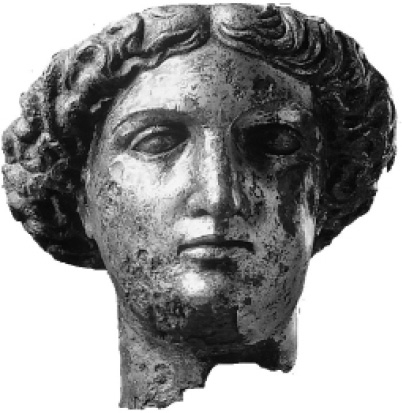

如果说对我们来说“民主”几乎总是“好事”，即便有时对所有人来说都有点模糊，那么对希腊人来说，它从一开始却是一个划分派别、挑起战端的词，把人按治理学说和社会阶层区分开来。贵族派别发起过反政变，来对抗治理国家的民主方式，这些派别的鼓动者和同情者数个世纪以来都没有把demos视为表示敬意的“人民”（如数个世纪后的贵族查尔斯·詹姆斯·福克斯将在法国大革命初期举杯祝酒：“献给我们的主人，人民”），而是视其为暴民，即无知而报复心强的群众，那些一贫如洗、受不起教育，因而不适于参加公共辩论、担任公共职务的穷人；以及那些太容易随煽动者摇摆，被对方拿空洞的许诺换得权力的人。柏拉图在他的对话集中用恶语公开指责民主是让舆论统治着知识；只有那些对事物的本质有哲学认识的人才适合统治——如果我们从字面上解读柏拉图（是否应该如此解读还有待商榷），那么除了在僭主或国王那里，这种观点基本上不受待见。总体来说，柏拉图向往的是品质卓越和个人完善这类理想化的贵族美德。
民主的根本理想是自由（eleutheria）。这种自由既是参与决策的政治自由——实际上几乎是义务，又是在一定程度上按自己的意愿生活的个人自由。最重要的自由是在公众集会上为公共利益发声的自由，以及在家庭隐私状态或讨论会（symposia），即男性的社会讨论俱乐部中自主发言和思考的自由。平等受到推崇，但那是法律和政治上的平等，绝不是经济平等（除了在一些讽刺戏剧和喜剧的狂想中，甚至是女性集会上女性之间的平等）。此外，还有城市本身免受外部征服的集体自由。作为整体的希腊人以身为自由人（eleutheroi）而自豪。他们不仅作为集体是自由的（实现这种自由经历了一些困难，最明显的是来自波斯诸帝王的支配），而且认为自己作为个体在道德方面优于他们所谓的野蛮人（barbaroi），原因就在于，野蛮的波斯人无论多么见多识广，都不享有自由的政治和民主。这是一种文化差别，而不是种族差别，是自由人的文化与专制主义臣民的对立。
贵族统治的难处和弊端都很多。主张在治理活动中由明智而经验丰富的人来统治，存在明显的缺陷。亚里士多德在演讲集《政治学》以及关于政体的研究中指出，贵族制作为一种理想，太容易要么沦为寡头制，即权势者的统治，要么沦为富豪制，即富人的统治。然而，政治和良好的治理活动都需要技巧和智慧。最好的答案就是找到某种中间道路：少数人经由多数人的同意进行统治，即“轮流统治和被统治”。无论如何，少数人的统治总是需要安抚多数人，尤其是为了国防和战事。用雅典人的话来说，要有人为三列桨大战船划桨，并且既乐意又纯熟；郁郁寡欢的奴隶或趋炎附势的雇佣军无法胜任这项工作，它属于捍卫自己的城市，或者积极扩张城市力量的自愿公民。

图2 在英国发现的女神密涅瓦的头部。密涅瓦是雅典城邦的守护神和庇护者帕拉斯·雅典娜在罗马的化身